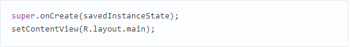

Создание мобильного прложения на "Java"
В
любом деле самое сложное — это начало. Часто бывает тяжело войти в контекст, с
чем столкнулся и я, решив разработать свое первое Android-приложение. Настоящая
статья для тех, кто хочет начать, но не знает с чего. Статья затронет весь цикл разработки приложения.
Вместе мы напишем простенькую игру “Крестики-Нолики” с одним экраном (в ОС
Android это называется Activity). Отсутствие опыта разработки на языке Java не должно
стать препятствием в освоении Android. Так, в примерах не будут использоваться
специфичные для Java конструкции (или они будет минимизированы на столько, на
сколько это возможно). Если Вы пишете, например, на PHP и знакомы с
основополагающими принципами в разработке ПО, эта статья будет вам наиболее
полезна. В свою очередь так как, я не являюсь экспертом по разработке на Java,
можно предположить, что исходный код не претендует на лейбл “лучшие практики
разработки на Java”.
Установка
необходимых программ и утилит
Перечислю необходимые инструменты. Их 3:
1.
JDK — набор для разработки на языке
Java;
2.
Android SDK and AVD Manager — набор утилит для разработки
+ эмулятор;
3.
IDE
c поддержкой разработки для Android:
·
Eclipse
+ ADT plugin;
·
IntelliJ
IDEA Community Edition;
·
Netbeans
+ nbandroid plugin;
Утилиты
устанавливаются в определенном выше порядке. Ставить все перечисленные IDE
смысла нет (разве только если Вы испытываете затруднения с выбором подходящей).
Я использую IntelliJ IDEA Community Edition, одну из самых развитых на данный
момент IDE для Java.
Запуск виртуального
устройства
Запустив AVD Manager и установив дополнительные пакеты
(SDK различных версий), можно приступить к созданию виртуального устройства с
необходимыми параметрами. Разобраться в интерфейсе не должно составить
труда.
Список
устройств
Создание
проекта

Мне всегда не терпится приступить к работе,
минимизируя подготовительные мероприятия, к которым относится создание проекта в
IDE, особенно, когда проект учебный и на продакшн не
претендует.
Итак, File->New
Project:
По
нажатию кнопки F6 проект соберется, откомпилируется и запустится на виртуальном
девайсе.
Структура
проекта
На
предыдущем скриншоте видна структура проекта. Так как в этой статье мы
преследуем сугубо практические цели, заострим внимание лишь на тех папках,
которые будем использовать в процессе работы. Это следующие каталоги: gen, res и
src. В папке gen находятся файлы, которые генерируются автоматически при сборке
проекта. Вручную их менять нельзя.
Папка
res предназначена для хранения ресурсов, таких как картинки, тексты (в том числе
переводы), значения по-умолчанию, макеты (layouts).
src
— это папка в которой будет происходить основная часть работы, ибо тут хранятся
файлы с исходными текстами нашей программы.
Первые
строки
Как
только создается Activity (экран приложения), вызывается метод onCreate(). IDE
заполнила его 2 строчками:

Метод
setContentView (равносильно this.setContentView) устанавливает xml-макет для
текущего экрана. Далее xml-макеты будем называть «layout», а экраны —
«Activity». Layout в приложении будет следующий:
Для
этого приложения идеально подойдет TableLayout. Id можно присвоить любому
ресурсу. В данном случае, TableLayout присвоен id = main_l. При помощи метода
findViewById() можно получить доступ к виду:
Теперь
необходимо реализовать метод buildGameField(). Для этого требуется сгенерировать
поле в виде матрицы. Этим будет заниматься класс Game. Сначала нужно создать
класс Square для ячеек и класс Player, объекты которого будут заполнять эти
ячейки.
Square.java
Player.java
Все
классы нашего приложения находятся в папке src.
Game.java
Инициализация
Game в конструкторе KrestikinolikiActivity.
Метод
buildGameField() класса KrestikinolikiActivity. Он динамически добавляет строки
и колонки в таблицу (игровое поле):
В
строке 8 создается объект, реализующий интерфейс View.OnClickListener. Создадим
вложенный класс Listener. Он будет виден только из
KrestikinolikiActivity.
Осталось
реализовать логику игры.
Определение
победителя
К. О. подсказывает, что в крестики-нолики выирывает
тот, кто выстроет X или O в линию длиной, равной длине поля по-вертикали, или
по-горизонтали, или по-диагонали. Первая мысль, которая приходит в голову — это
написать методы для каждого случая. Думаю, в этом случае хорошо подойдет паттерн
Chain of Responsobility. Определим интерфейс
Так
как Game наделен обязанностью выявлять победителя, он реализует этот интерфейс.
Настало время создать виртуальных «лайнсменов», каждый из которых будет
проверять свою сторону. Все они реализует интерфейс
WinnerCheckerInterface.
WinnerCheckerHorizontal.java
WinnerCheckerVertical.java
WinnerCheckerDiagonalLeft.java
WinnerCheckerDiagonalRight.java
Проинициализируем
их в конструкторе Game:
Реализация
checkWinner():
Победителя
проверяем после каждого хода. Добавим кода в метод onClick() класса
Listener
Метод
gameOver() реализован в 2-х вариантах:
Для
Java, gameOver(Player player) и
gameOver() — разные
методы.
Воспользовавшись
Builder'ом Toast.makeText, можно быстро создать и показать уведомление.
refresh() обновляет состояние поля:
Видео
готового приложения